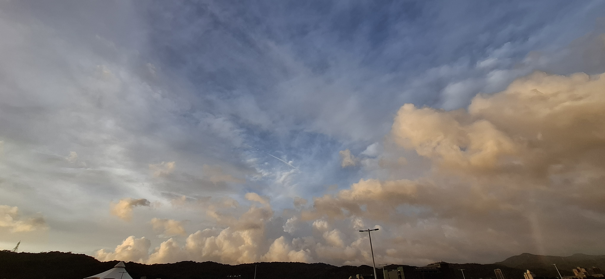
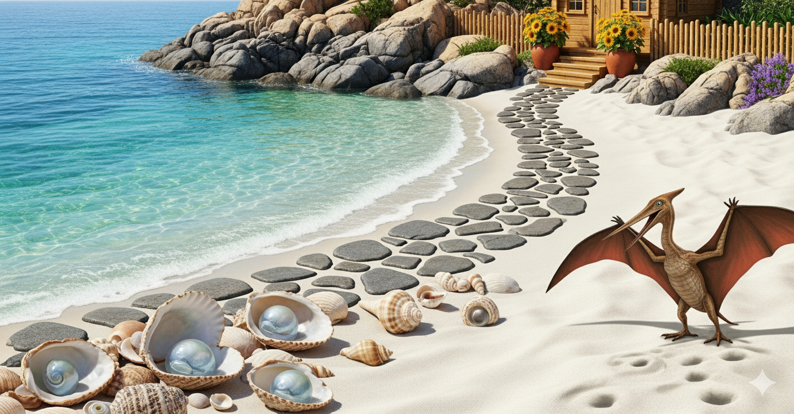

首頁

關於我
闕文郁
國立台北教育大學 資訊科學系
我是一位大二學生，對寫程式有一點興趣所以目前正努力學習中，同時也非常喜歡文學及藝術，故而時常選修相關課程以豐富眼界。
學習經歷
| 年份 | 學校 |
|---|---|
| 2021-2024 | 台北市立內湖高中 |
| 2024-迄今 | 國立台北教育大學 |
程式能力
| 語言 | 程度 |
|---|---|
| Java | ⭐⭐ |
| C++ | ⭐⭐ |
| Python | ⭐ |
音樂作品
課程中的音樂創作練習，嘗試運用AI工具生成一段振奮人心的音樂。
視訊作品
和同學一起製作四人Vlog，紀錄我們的一天。（由於影片檔案過大，以網址呈現。）
圖片作品


使用Gemini生成圖片，練習如何發布指令。